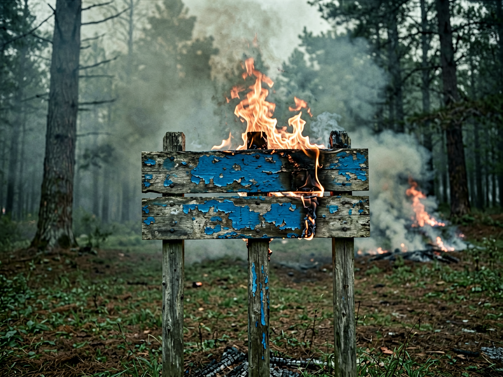
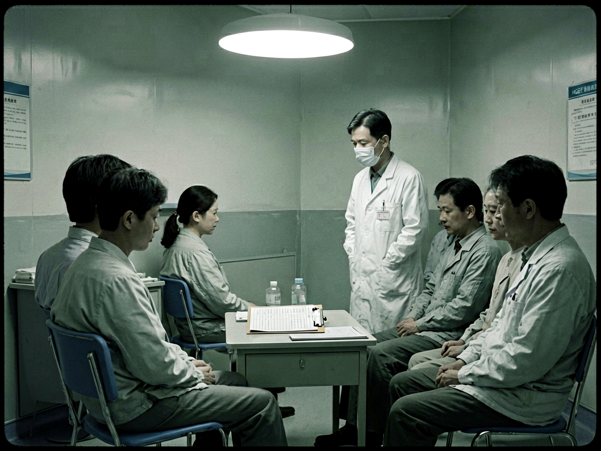

兰陵花不再开放
一决议
HGEF 十二圣徒第 █ 次圣务会议纪要（节选）
与会：圣徒 5 人（代号略），圣鉴部、圣行部、圣抚部、圣录部代表各 1 人。圣鉴部报告：过去 12 个月，与 HGEF-ARC-001 相关的铃铛声报告新增 █ 起，其中 3 起报告者称「听到了铃声并跟着走」，事后无法回忆路线；报告点位较历史记录外扩约 █ 公里，已接近公园常规露营区；依据 HGEF-ARC-001 证词建立的「献祭循环」模型，对象处于持续饥饿期，区域内滞留者数量未知，若不处理，失踪人员复现率将持续上升。
争论焦点：是否推翻 HGEF-OP-003、HGEF-OP-004 的「不可行」结论。
实体疑似信念类意识体，无已知物理消灭机制，抹除手段未经验证；失败代价无法评估。
圣鉴部 A 员依据证人假说，对象依赖「被看见、被想象」维持存在。若切断其全部认知来源——实物、图像、名称、记忆——对象将失去供养。此路径不依赖物理消灭，与既有评估并不冲突。
圣鉴部 B 员记忆清除本身就是异常。我们抹掉所有人的记忆，再告诉世界一切正常——这和对象对被困者做的事有什么区别？
圣录部 C 员我不确定让一个人忘记自己最好的那个夏天，算不算善后。
圣抚部 D 员（弃权）决议：对 HGEF-ARC-001 执行彻底抹除，行动代号「归零」；批准使用 5 级权限及记忆清除程序；HGEF-OP-003、HGEF-OP-004 结论即日起失效，原文档存档备查。会议于 03:40 结束。表决记录：4 票赞成，1 票反对（圣录部），1 票弃权（圣抚部）。
二行动前
圣抚部记录：以「历史遗留设施清理与生态修复」名义与公园管理层协调，回收求生系统全部相关实物；少年护林员俱乐部教材、手册、合影、徽章中涉及「兰陵花女士」的内容全部回收；记忆清除对象名单编制完毕：含匿名证人、退休护林员丹、历任俱乐部负责人、相关游客共 █ 人。
原吉祥物扮演者拒绝交出演出服，称「她救过孩子」。演出服由圣行部强制回收并焚毁；该人员列入记忆清除名单。清除后无异常反应，但她偶尔会在公园门口站很久，望着林区方向。匿名证人于决议前完成身份核实，并自愿参与行动，接受记忆清除。
圣录部记录：档案库中一切包含「兰陵花女士」名称、形象或口令的文件、照片、录音，列入销毁清单；本故事文件不在销毁清单内。
三行动日志 · 圣行部摘录
第一天
06:00 一队 6 人出发。装备：焚烧设备、信标、眼罩、耳塞。
07:40 于东南部林区边缘确认一处旧告示牌残桩。未见 D1。
09:15 进入证词描述的「中断山道」区域。地图显示该区域没有道路，现场却有明显的踩踏痕迹，通向林中。
10:30 发现第一枚铃铛。挂在断枝上，没有系蓝胶带。按规程不触碰，登记后由焚烧组处理。
11:00 铃铛越来越多。通讯开始出现杂音。队长下令全员佩戴单侧耳塞，缩短行动窗口。
第二天
05:40 醒后确认：六块手表全部停摆于 00:00。夜班日志空白，交接班人员坚称「没有异常」。记为认知影响表现。
06:20 发现 D1。涂改告示牌立在空地中央，亮蓝色油漆：「不要停下、不要聆听、不要查看、兰陵花女士不会带你回家。」空地边缘的树上缠着新鲜蓝胶带。
07:00 圣鉴部指令：就地焚烧。焚烧组操作时，整片林子都在响。铃铛声从每个方向涌过来，又各自散开。
07:15 D1 焚毁。铃响停止。空地安静得能听见火炭崩裂。队伍按证词继续向「溪流位置」推进。没有水源。

第三天（最终接触）
04:00 起，铃响持续，方位无法定位。风停了。05:00 实体于空地边缘现身。描述与 HGEF-ARC-001 一致：约 3 米，蓝色连衣裙，下颌缺失，裙身缝满铃铛，双脚离地约 20–30 厘米。按预案，5 名队员闭眼、戴罩、堵耳，原地蹲伏。1 人留在可见位——原少年护林员俱乐部负责人，匿名证人。
05:12 06 号队员耳塞脱落，短暂睁眼，起身向前走出七步。见证者将他按倒，重新封闭其感官。06 号事后无法回忆该时段，列为清除优先对象。
05:40 证人闭眼。铃响骤然停止。紧接着，林中响起一次单独的、极轻的铃声——像是回应。05:41 全体按计划撤离。无人受伤。
四抹除
圣抚部执行记录：当日 06:00 起，全部在场人员接受记忆清除。清除范围包含「兰陵花女士」名称、形象、口令及行动全程；证人主动接受程序，清除范围额外包含 1998 年目击经历及此后全部相关记忆；清除前，证人问：「她会疼吗？」圣抚部没有回答。公园侧人员按名单执行。被清除者事后记忆中的空缺，以「老旧项目早已废弃」填补。
圣录部执行记录：HGEF-ARC-001 关联实物（蓝胶带、铃铛、纪念品、教材、照片）统一焚毁；档案库关联记录转入销毁程序，销毁记录存档；唯一留存：本故事文件。圣录部 C 员拒绝接受记忆清除。他在名单上划掉了自己的名字，将本故事文件藏入档案库最深处。事后无人追究。

五尾声
公园恢复了平静。没有铃声。没有蓝胶带。新教材里没有她的名字，新护林员不知道这个项目存在过。退休的护林员丹在俱乐部门口坐了一整个下午，想不起来自己在等谁。
唯一的存档躺在档案库最深处，是圣录部 C 员亲手放的。清除名单上，他的名字旁有一道划痕——他自己划掉的。没有人再打开过它。
档案库管理员批注，20██ 年：编号 HGEF-ARC-001-T 的文件夹今天自己掉在地上。里面只有一张纸，上面多了一行字，不是我的笔迹：
> 不要停下。
圣录部注（项目外）：本故事档案与 HGEF-ARC-001 及 HGEF-OP-008 互相关联。为唯一留存记录，不纳入销毁程序。